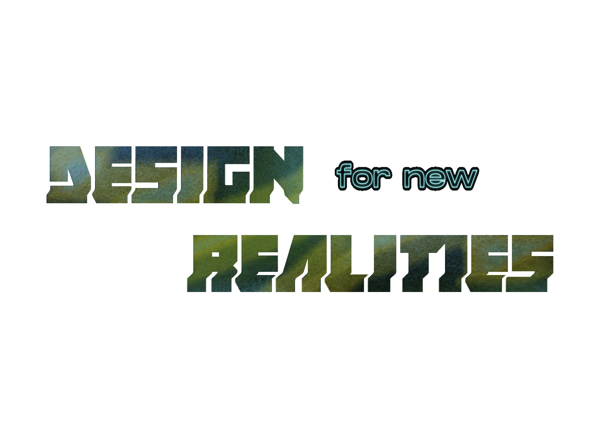
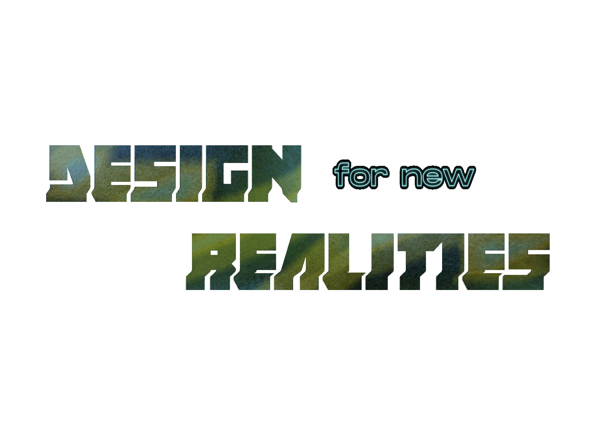

Keiichi combines concept film-making and interaction design to critcally explore the future of everyday life. His work has been widely exhibited, from the MoMA to the V&A, as well as attaining viral success online, particularly with his films HYPER-REALITY and MERGER. He has held positions as Leap Motion's VP deisgn and led the Mixed Reality experience design team at Microsoft.


Jasper is a spatial designer whose previous work has included augmented reality and spatial input at Facebook, and design research at Leap Motion. Independent projects have explored experimental film-making and architectural installations.